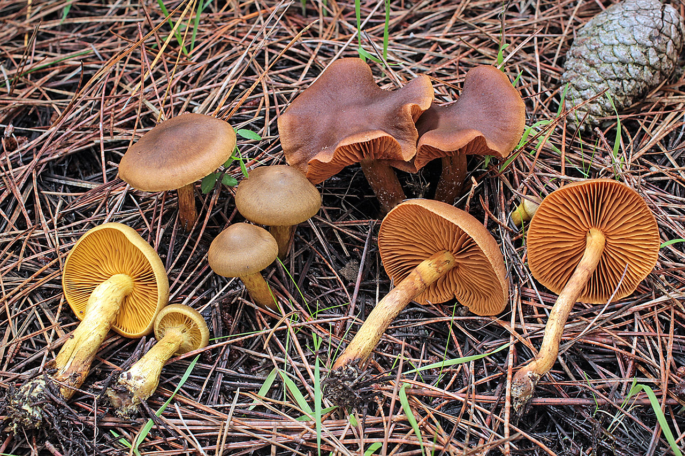
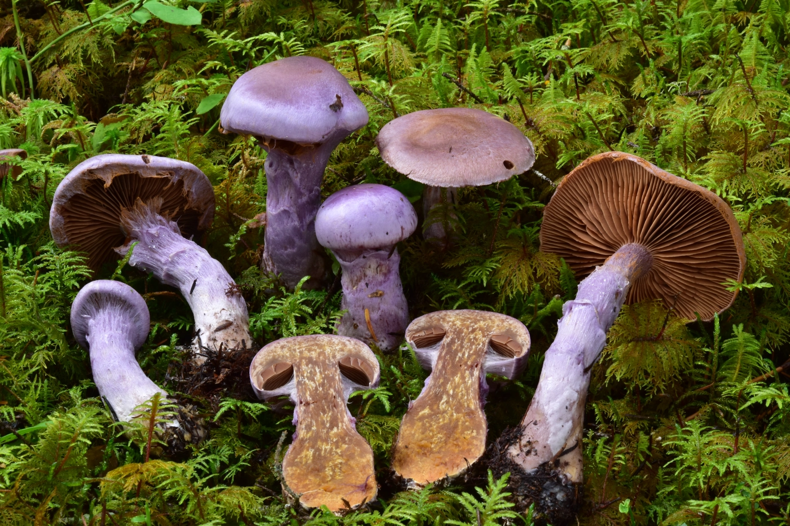

Cortinarius
Cortinarius is a globally distributed genus of fungus in the family Cortinariaceae. Its members are commonly known by the names cortinar and webcap. It is suspected to be the largest genus of agarics, containing over 2,000 widespread species.
Young specimens have a cortina (veil) between the cap and the stem, hence the name. Most of the fibres of the cortina are ephemeral and leave no more than limited remnants on the stem or cap edge. All species have a rusty brown spore print. Several species (such as C. orellanus) are highly toxic and many species are difficult to distinguish, making their consumption inadvisable.
| Mushroom 1 | Mushroom 2 | Mushroom 3 | Mushroom 4 |
|---|---|---|---|

Cortinarius violaceus |

Cortinarius vanduzerensis |

Cortinarius croceus |

Cortinarius traganus |